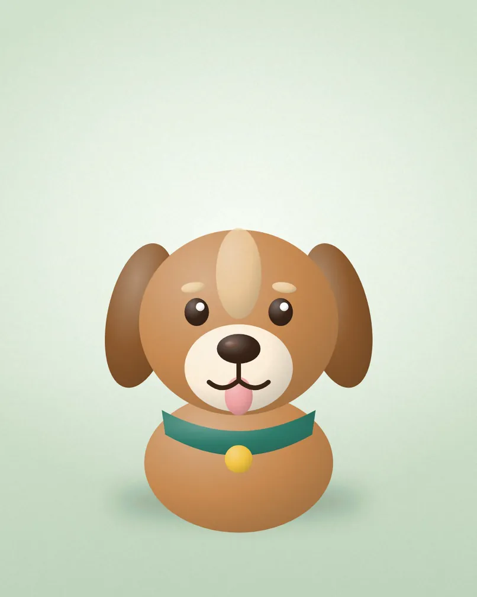
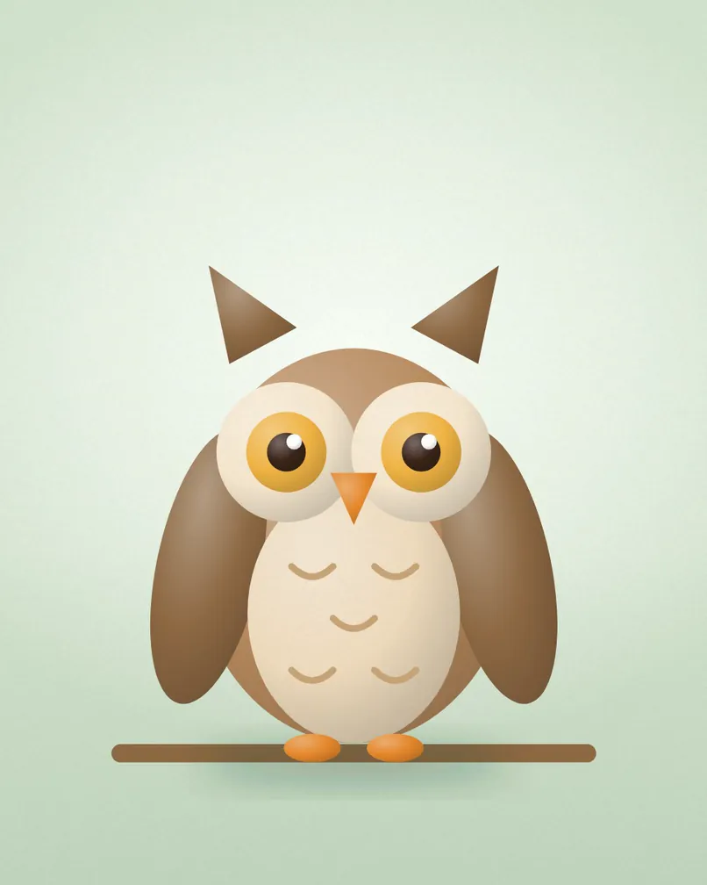

A safe place to begin again.
{{tagline}}

01DogsDogs
Rescued, rehabilitated and ready for a home.
All animals → 02Cats
02CatsCats
Independent, cuddly and everything between.
All animals → 03Small animals
03Small animalsSmall animals
Rabbits, guinea pigs and other little friends.
All animals →
04WildlifeWildlife
Injured and orphaned wild animals, cared for until release.
All animals →A day at the sanctuary
Breakfast rounds
Every animal is fed, checked and spoken to before the gates open.
Medicine and vet checks
Our vet visits twice a week. Everything else is done by our team, one animal at a time.
Doors open
Visitors are welcome to meet the animals looking for homes.
Lunch and play
Quiet time for the cats and a long run in the paddock for the dogs.
Walks with volunteers
Our volunteers take the dogs out and come back with the best stories.
Doors close, evening feed
A last round, fresh bedding and lights down for the night.
Small sanctuary, big hearts
{{owner_name}} opened {{business_name}} in {{year_founded}} to give animals in need a second chance. Today our team and volunteers care for them every day of the year.
All animalsPlan a visit or ask to adopt
Send us a message and we will reply within a few days.
| Monday to Friday | {{hours_weekdays}} |
|---|---|
| Saturday | {{hours_saturday}} |
| Sunday | {{hours_sunday}} |
{{phone}}